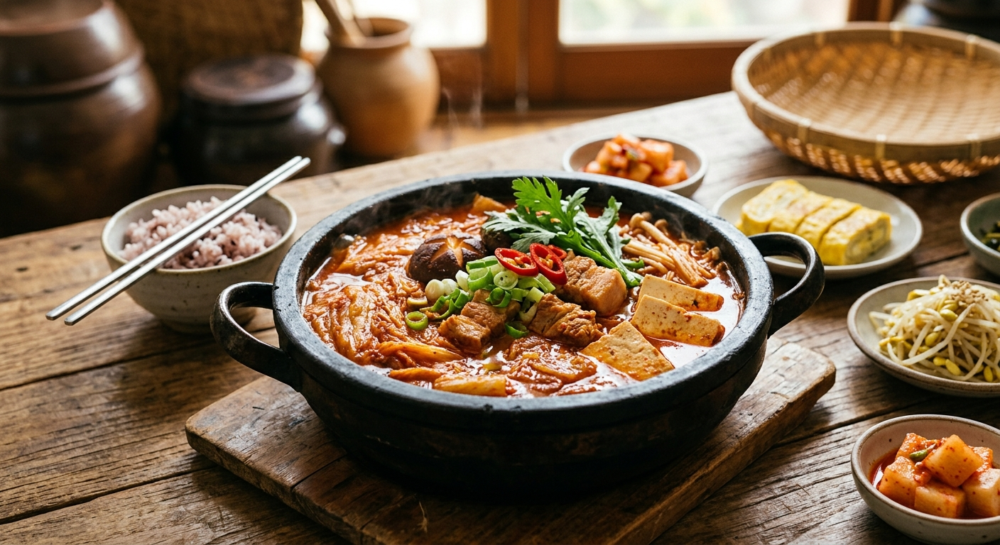

Kimchi Jjigae is one of the most beloved, comforting stew dishes in Korean cuisine. Traditionally made with well-aged, sour kimchi, this hearty stew combines rich broth with tender chicken or tofu, mushrooms, and scallions to create a deeply flavorful balance of spicy, tangy, and savory notes. As the kimchi simmers, its flavors meld into the broth, creating a soul-warming dish that is a staple on Korean dinner tables.
Best enjoyed hot straight from the pot, Kimchi Jjigae is typically served alongside a bowl of freshly steamed rice and classic side dishes (banchan). It is an effortless, deeply satisfying meal that transforms simple, fermented ingredients into a rich and comforting feast.
Heat the sesame oil in a pot over medium heat. Add the minced garlic and sliced chicken (if using). Sauté for 2-3 minutes until the surface of the meat turns light. Add the chopped kimchi and fry together for another 4-5 minutes until the kimchi softens.
Stir in the Gochugaru (chili powder), Gochujang (chili paste), soy sauce, and kimchi juice to coat the ingredients. Pour in the stock or water, mixing everything thoroughly.
Bring the stew to a rolling boil over high heat. Once boiling, reduce the heat to medium-low, cover with a lid, and let it simmer gently for 15–20 minutes to allow the flavors to deepen.
Uncover the pot and arrange the sliced tofu and mushrooms on top. Simmer uncovered for an additional 5 minutes until the tofu absorbs the rich broth.
Taste and adjust seasoning with a pinch of salt if needed. Sprinkle the chopped green onions over the top, turn off the heat, and serve piping hot alongside steamed rice.